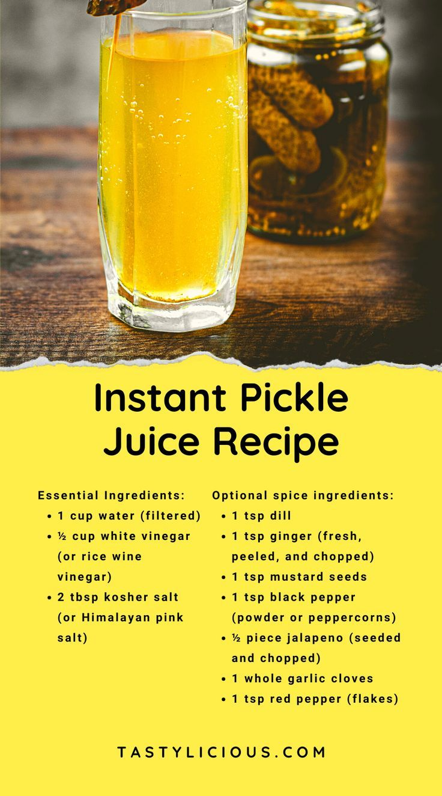

Pickle Brine Juice
Description
Pickel juice from the jar is great, but it can bee to strong you are unlikely to have it on demand.
Recipe
Essential Ingredients:
- 1 cup water (filtered)
- 1/2 cup white vinegar (or rice wine vinegar)
- 2 tbsp kosher salt (or Himalayan pink salt)
Optional spice ingredients:
- 1 tsp dill
- 1 tsp ginger (fresh, peeled, and chopped)
- 1 tsp mustard seeds
- 1 tsp black pepper (powder or peppercorns)
- 1/2 piece jalapeno (seeded and chopped)
- 1 whole garlic cloves
- 1 tsp red pepper (flakes)